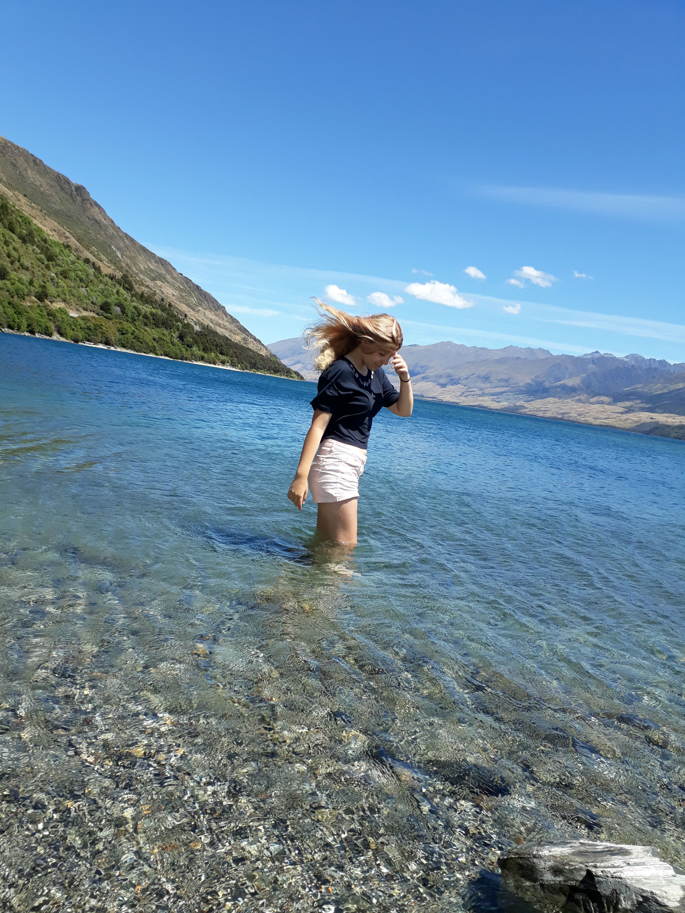
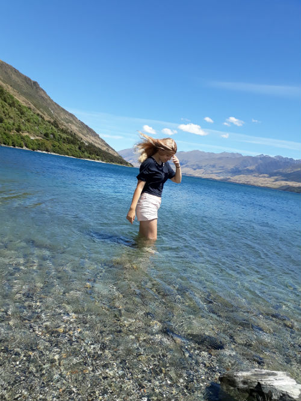
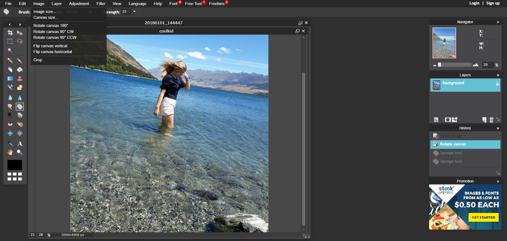
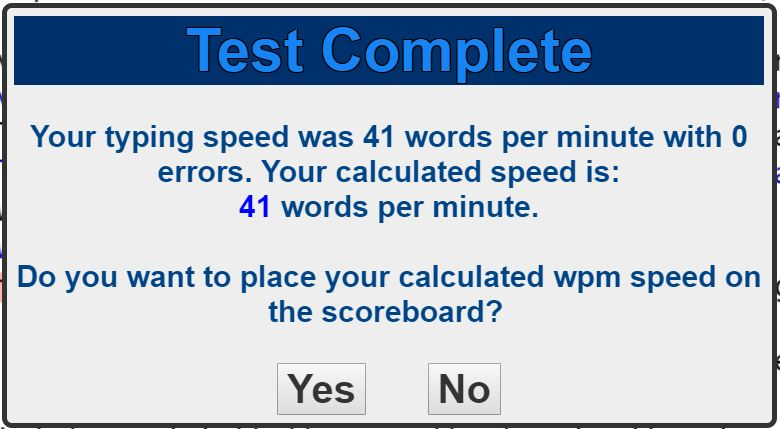

home
photography
about me
technology
contact
debate
Click here to see how to resize images using PIXLR
How to resize pictures with PIXLR
 
First, I went to the 'image size' button from the 'image' button from the navigation bar at the top.

Then I changed the pixel size

My typing speed